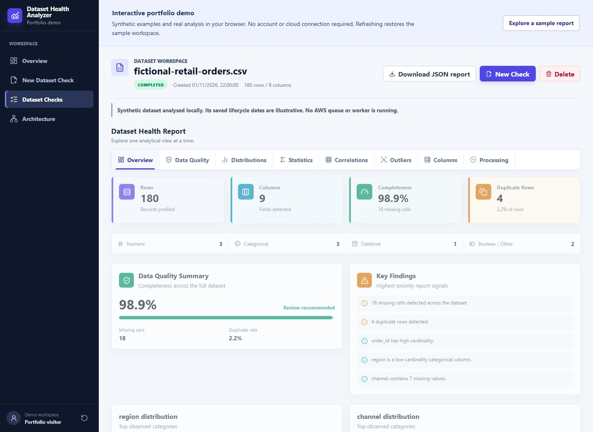

Featured · Data & Cloud
Data & cloud engineering project
Dataset Health Analyzer
A CSV analysis workflow with a deployed browser demo. My cloud project connects uploads, queued workers, progress tracking and reports.
- Scope
- CSV workflow & application integration
- Tools
- React · Node.js · AWS S3 / SQS / Fargate
Live analysis demo · recorded AWS experiment